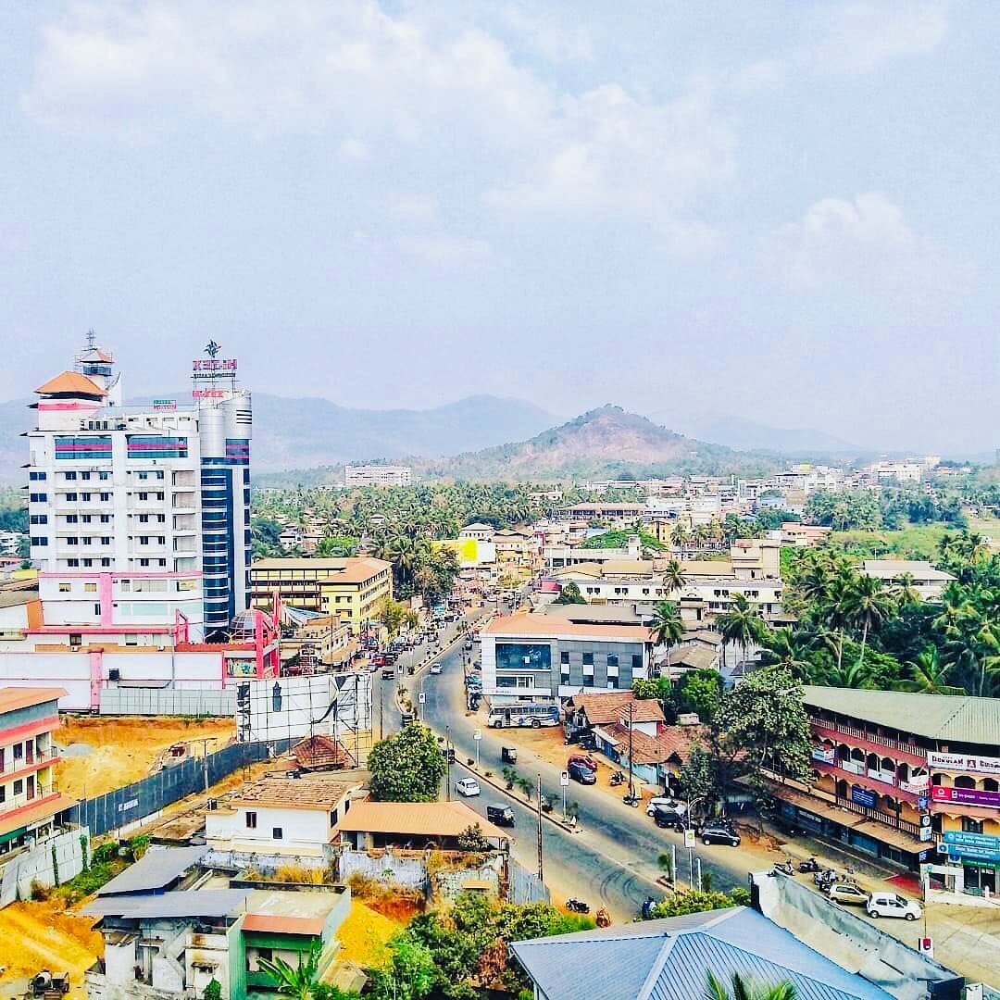
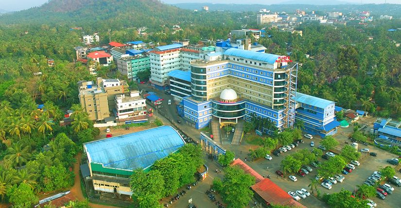
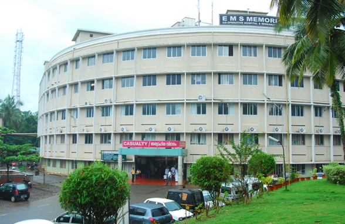

About Perinthalmanna
Perinthalmanna is a beautiful town located in Malappuram district, Kerala, India.
It is known as the Hospital City of Kerala because of its world-class
healthcare facilities. The town is also famous for its rich cultural heritage and
picturesque surroundings.Perinthalmanna is a rustic municipality that attracts people for its
old-world charm. The place creates an ambience that takes visitors to an ancient and unique way of life.
Read More

Major Medical Cares
Perinthalmanna offers comprehensive medical care includes government facilities and numerous specialty clinics for eye care,
dental services, orthopedics, and alternative medicine like Ayurveda. You can also find specialized centers for heart conditions,
fertility, physiotherapy, and speech and hearing, as well as advanced diagnostic and wellness services.
- KIMS Alshifa Hospital:is a multi-disciplinary, 500-bed super-specialty hospital in Malappuram, Kerala. It has been a
leading tertiary care provider in the region for over 35 years.Located over 9 acres with a built-up area of 3.5 lakh square feet,
the hospital is well-equipped with modern facilities. Over 35 specialty and super-specialty departments, including cardiology,
gastroenterology, endocrinology, and neurology. Multiple modern operating theaters and a variety of surgeries, including joint replacement,
microvascular surgery, and spinal surgery.
Read More

- Moulana Hospital:is a 468-bed super specialty hospital located in Perinthalmanna, Kerala. It was established in 1989
by the Moulana Charitable Trust and is accredited by the National Accreditation Board for Hospitals and Healthcare Providers (NABH).
The hospital's nursing college is affiliated with the Kerala University of Health Sciences (KUHS).
Read More
- MES Medical College Hospital (MES MCH): is a multi-specialty hospital located in Perinthalmanna, Malappuram, Kerala.
It was established in 2003 and is part of the MES Academy of Medical Sciences, a 60-acre campus that also includes
dental and nursing colleges.: The hospital is equipped with a modern cath lab for cardiac surgery, a dialysis unit, and
specialized units for laparoscopic surgery and other procedures.
Read More
- EMS Memorial Co-operative Hospital: is a multi-disciplinary super-specialty hospital named after former Chief Minister
E. M. S. Namboodiripad. It is a significant hospital in the cooperative sector in Kerala. Affiliation with EMS College of
Nursing and EMS College of Paramedical Sciences, providing various medical and paramedical courses.
Read More
